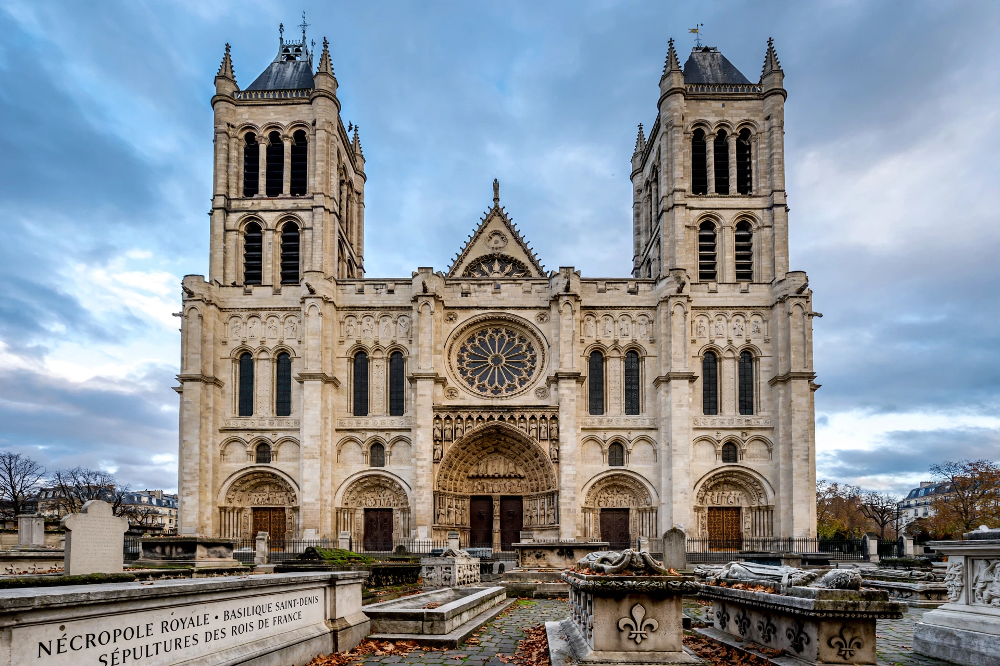

The Basilica of Saint-Denis is a large former medieval abbey church and present-day cathedral in Saint-Denis, a northern suburb of Paris. It is the burial site of almost all French kings from the 10th to the 18th centuries, and is regarded as the first major Gothic building.

Built over the tomb of Saint Denis, patron saint of France. Abbot Suger's rebuilding (1135–1144), especially the ambulatory with rib vaults and stained glass, pioneered Gothic architecture. The royal necropolis was desecrated during the French Revolution and later restored.